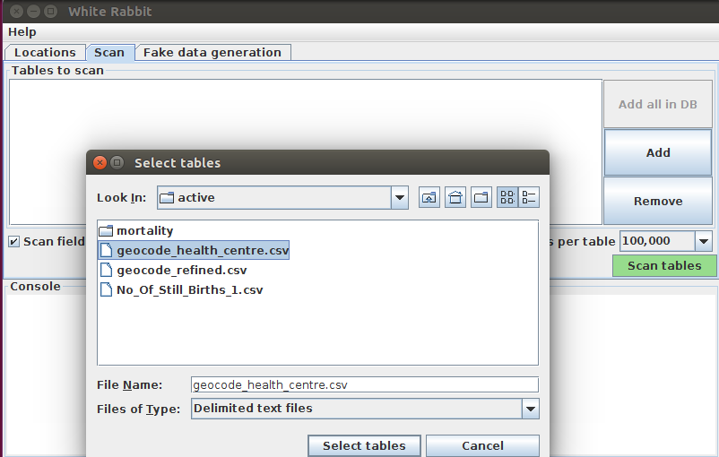
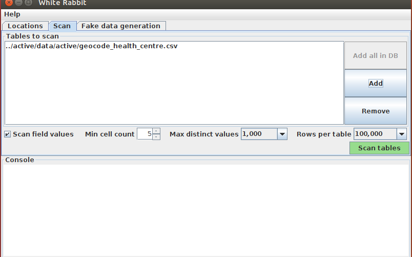
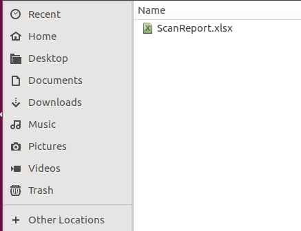

Linux/mac:
command:- java -jar WhiteRabbit.jar
Windows:
command:- javaw.exe -jar WhiteRabbit.jar
Working Folder
Any files that WhiteRabbit creates will be exported to this local folder. Use the “Pick Folder” button to navigate in your local environment where you would like the scan document to go.
Source Data
Here you can specify the location of the source data. The following source types are supported: delimited text files, MySQL, Oracle, SQL Server, and PostgreSQL. Below are connection instructions for each data type of data source. Once you have entered the necessary information, the “Test connection” button can ensure a connection can be made.
Delimited text files
Delimiter: specifies the delimiter that separates columns, default is ‘,’ and your can write ‘tab’ for tab delimited.
WhiteRabbit will look for the files to scan in the same folder you set up as a working directory.
MySQL
PostgreSQL
A scan generates a report containing information on the source data that can be used to help design the ETL. Using the Scan tab in WhiteRabbit you can either select individual tables in the selected source database by clicking on ‘Add’ (Ctrl + mouse click)
Once you have selected the file click on scan button to generate scan report
A scan report will be generated in your working folder, upload this scan file to the second ETL tool, i.e Rabbit-In-a-Hat
